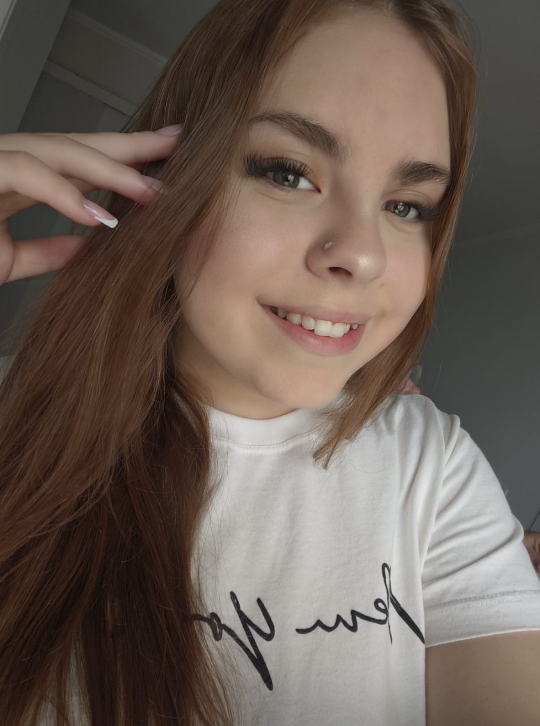
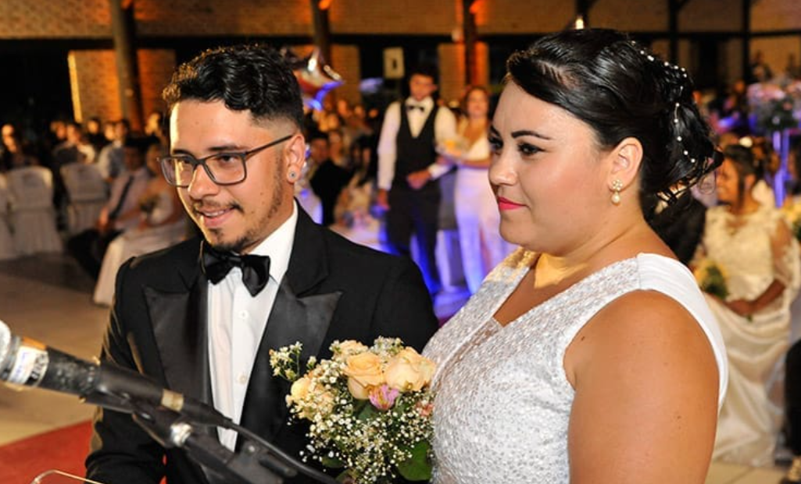
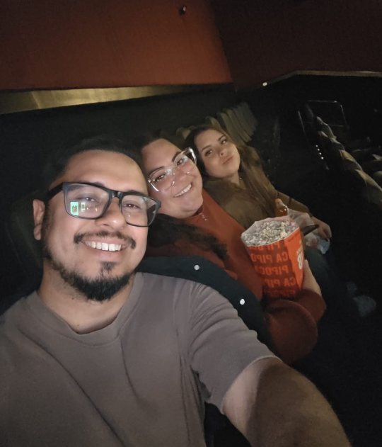

Feliz aniversário
Nany
Uma pequena surpresa, feita com todo o amor do mundo,
para celebrar cada segundo da sua existência.
✦ ✦ ✦
Sua Vida
Desde 3 de novembro de 1994
fotos\nany.jpg
Há exatamente esse tempo, o mundo ganhou algo que ele nem sabia que precisava: você. Cada segundo que passa nesse contador é um segundo em que o mundo foi mais bonito, mais leve e mais cheio de amor, simplesmente porque você existe. A gente olha pra esses números e não vê apenas tempo — vê risadas, abraços, força nos dias difíceis e luz nos dias comuns. Obrigado por cada instante. Que venham milhões de segundos a mais, e que a gente tenha a sorte de viver todos eles ao seu lado.
✦ ✦ ✦
Você, Mãe
Desde 8 de novembro de 2011

fotos\beatriz.jpg
Nesse dia, nasceu a Beatriz — e junto com ela nasceu a melhor mãe do mundo. Desde então, cada segundo desse contador carrega noites mal dormidas transformadas em canções de ninar, medos transformados em coragem e um amor que não cabe em número nenhum. Ser mãe não é algo que você faz, é algo que você é, em cada gesto, em cada cuidado, em cada "tá tudo bem" dito na hora certa. A Beatriz teve a sorte de nascer dos seus braços — e essa página, aliás, foi ideia dela. Porque filha de um coração gigante só podia ter um coração gigante também.
✦ ✦ ✦
Nós Dois
Desde setembro de 2015, quando nos conhecemos

fotos\casal.jpg
Em setembro de 2015 o meu mundo mudou de cor. Eu não sabia ainda, mas naquele momento começava a melhor parte da minha história. Cada segundo desse contador é um segundo em que eu escolhi você — e escolheria de novo, em todas as vidas, em todos os universos. Você me ensinou que amor não é só sentimento: é parceria, é rir junto, é segurar a mão quando o dia aperta, é construir um lar onde a gente sempre quer voltar. E em 30 de novembro de 2018 eu tive a honra de dizer "sim" para a mulher da minha vida.
✦ ✦ ✦
Feliz Aniversário, Amor

fotos\familia.jpg
Esses contadores nunca vão parar — assim como o nosso amor por você. Que esse novo ano da sua vida seja cheio de tudo aquilo que você entrega ao mundo todos os dias: carinho, alegria, cuidado e amor. Você é a nossa casa, o nosso porto seguro e a nossa maior sorte. Te amamos infinitamente.
O Homem mais feliz do mundo & Beatriz com todo o amor que existe em nós 💖